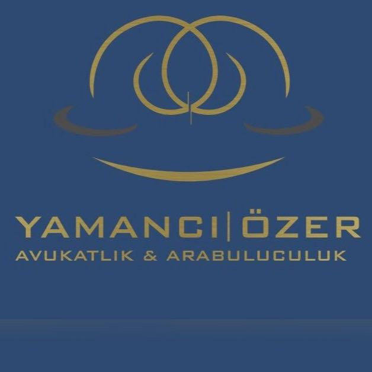

Gayrimenkul Hukuku
Tapu iptali ve tescil, ortaklığın giderilmesi, elatmanın önlenmesi, ecrimisil ve taşınmazın devrine ilişkin uyuşmazlıklarda hukuki danışmanlık ve dava takibi.
AVUKATLIK & ARABULUCULUK
Gerçek ve tüzel kişilere; hukuki danışmanlık, dava ve icra takibi ile arabuluculuk alanlarında mesleki özen ve gizlilik esaslı hizmet sunuyoruz.
Çalışma alanlarımız
01 / BÜROMUZ
Yamancı | Özer Avukatlık & Arabuluculuk, gerçek ve tüzel kişilere hukuki danışmanlık, yargı mercileri nezdinde temsil ve uyuşmazlıkların çözümüne yönelik hizmet sunar.
Her iş ve dosyayı somut olayın özellikleri, ilgili hukuki düzenlemeler ve delil durumu çerçevesinde değerlendirir; mesleki bağımsızlık, özen yükümlülüğü ve sır saklama ilkeleri doğrultusunda takip ederiz.
02 / ÇALIŞMA ALANLARI
Özel hukuk alanlarında bireysel ve kurumsal
ihtiyaçlara yönelik hukuki destek.
Tapu iptali ve tescil, ortaklığın giderilmesi, elatmanın önlenmesi, ecrimisil ve taşınmazın devrine ilişkin uyuşmazlıklarda hukuki danışmanlık ve dava takibi.
Kentsel dönüşüm projelerinde malik ve yüklenici ilişkileri, ortak karar süreçleri, temsil yetkileri, sözleşmeler ve mülkiyet haklarının korunmasına yönelik hukuki destek.
Arsa payı karşılığı inşaat ve eser sözleşmelerinin hazırlanması; hakediş, teminat, gecikme, eksik veya ayıplı iş ve teslim uyuşmazlıklarının takibi.
Şirket kuruluşu, esas sözleşme düzenlemeleri, pay devirleri, ortaklık ilişkileri, genel kurul süreçleri ve yönetici sorumluluğu konularında hukuki danışmanlık.
Ticari alacaklar, haksız rekabet, acentelik, bayilik, distribütörlük ve ticari işletme ilişkilerinden doğan uyuşmazlıklarda hukuki temsil ve dava takibi.
Sözleşmelerin hazırlanması, müzakeresi ve hukuki incelemesi; ifa, temerrüt, fesih, cezai şart, sebepsiz zenginleşme ve tazminat taleplerinin takibi.
Konut ve işyeri kira sözleşmeleri, kira bedelinin tespiti ve uyarlanması, tahliye, kira alacağı ve depozito uyuşmazlıklarında hukuki danışmanlık ve temsil.
Apartman ve site yönetimlerine danışmanlık; yönetim planı, kurul kararları, ortak alan kullanımı, aidat ve ortak gider uyuşmazlıklarının takibi.
Özel hukuk alacaklarının tahsiline yönelik ilamlı ve ilamsız icra takipleri, itiraz ve şikâyet süreçleri, menfi tespit, istirdat ve iflas işlemlerinin takibi.
Anlaşmalı ve çekişmeli boşanma, velayet, kişisel ilişki, nafaka, mal rejiminin tasfiyesi, aile konutu ve soybağı uyuşmazlıklarında hukuki temsil.
Mirasçılık, terekenin tespiti ve paylaşımı, mirasın reddi, tenkis, vasiyetnamenin iptali ve muris muvazaasına dayalı taleplerde hukuki danışmanlık ve dava takibi.
İşçi ve işveren ilişkilerinde sözleşme ve fesih süreçleri; işe iade, kıdem ve ihbar tazminatı, ücret ve diğer işçilik alacaklarına ilişkin uyuşmazlıkların takibi.
Ayıplı mal ve hizmet, mesafeli satış, konut satışı ve tüketici sözleşmelerinden doğan uyuşmazlıklarda danışmanlık; tüketici hakem heyeti başvuruları ve dava takibi.
Sigorta sözleşmeleri ve teminat kapsamı, hasar bedeli, araç değer kaybı, bedensel zarar ile maddi ve manevi tazminat taleplerinde hukuki destek.
Marka, tasarım, patent ve telif haklarına ilişkin sözleşmeler; lisans ve devir işlemleri ile hak ihlallerinden doğan özel hukuk taleplerinin takibi.
03 / ARABULUCULUK
Tarafların menfaatlerini ve çözüm iradelerini esas alan arabuluculuk faaliyeti.
Arabuluculuk faaliyetini, avukatlık ve taraf vekilliği hizmetlerinden ayrı olarak; tarafsızlık, eşitlik ve gizlilik ilkeleri doğrultusunda yürütürüz. Tarafların uyuşmazlık konularını müzakere etmelerine ve karşılıklı kabul edilebilir çözüm seçeneklerini değerlendirmelerine yardımcı oluruz.
04 / EKİBİMİZ
Avukatlarımız, stajyer avukatımız
ve büro personelimiz.


Büro Personeli
05 / BLOG
Kentsel Dönüşüm
Riskli yapı raporunun hazırlanmasından itirazın değerlendirilmesine kadar malikin takip etmesi gereken hukuki aşamalar.
Av. Arb. Kadir Yamancı
İnşaat Hukuku
Yüklenicinin gecikmesi veya işi bırakması halinde fesih seçeneği, tapu devirleri ve üçüncü kişilerin durumu nasıl değerlendirilir?
Av. Arb. Kadir Yamancı
Gayrimenkul Hukuku
Tapu kaydının düzeltilmesi taleplerinde hukuki sebep, taraflar, deliller ve geçici koruma ihtiyacının belirlenmesi.
Av. Arb. Kadir Yamancı
06 / İLETİŞİM
Hukuki danışmanlık ve görüşme talepleriniz için formu doldurabilir, telefon veya e-posta üzerinden bizimle iletişime geçebilirsiniz.
Size dönüş yapabilmemiz için bilgilerinizi ve mesajınızı iletin.